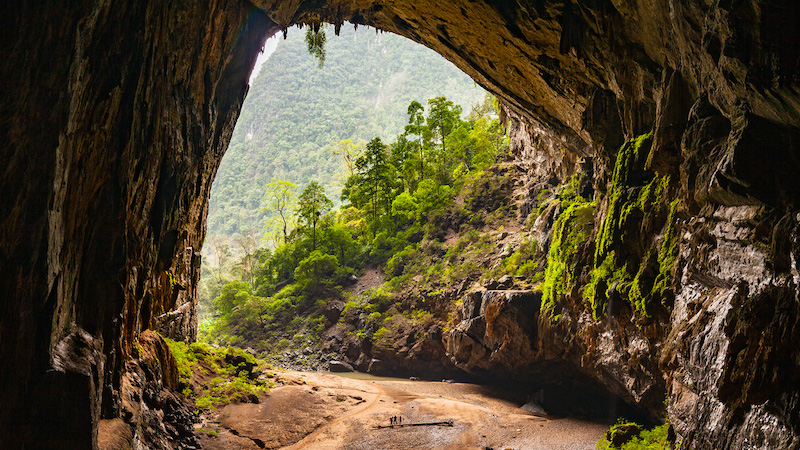
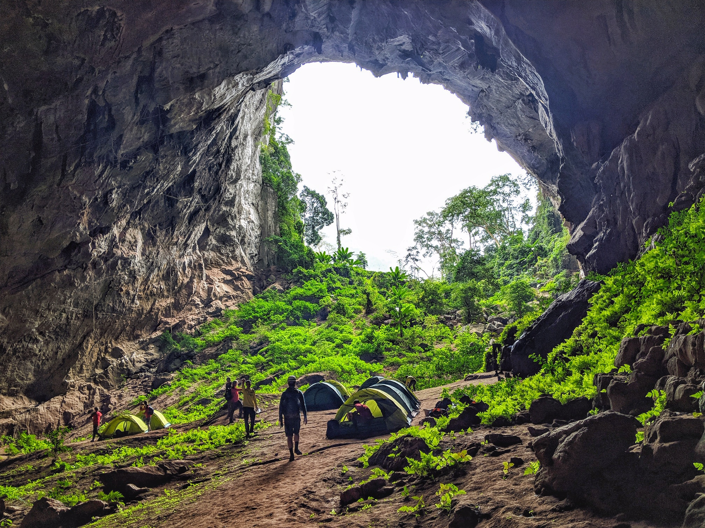
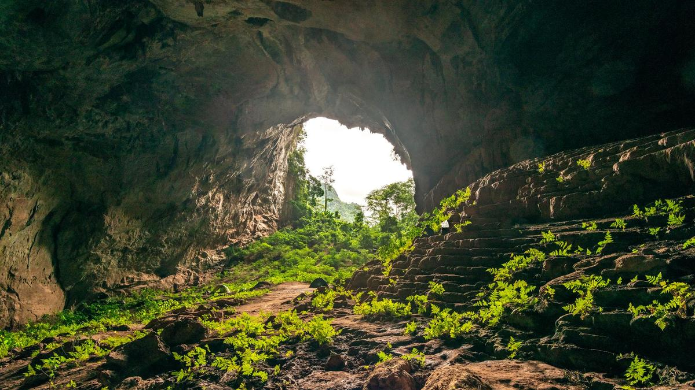
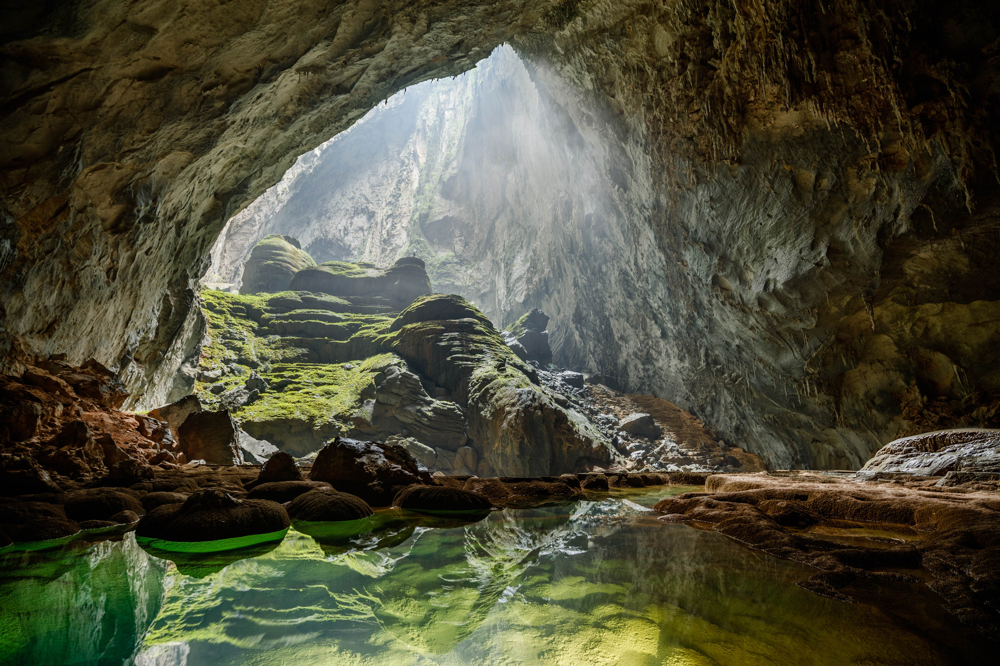
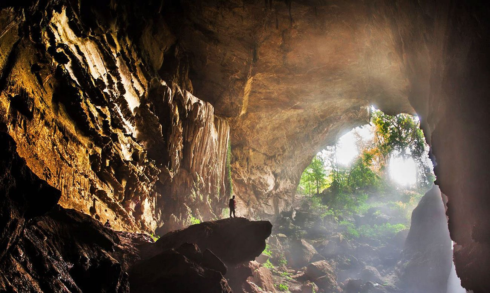
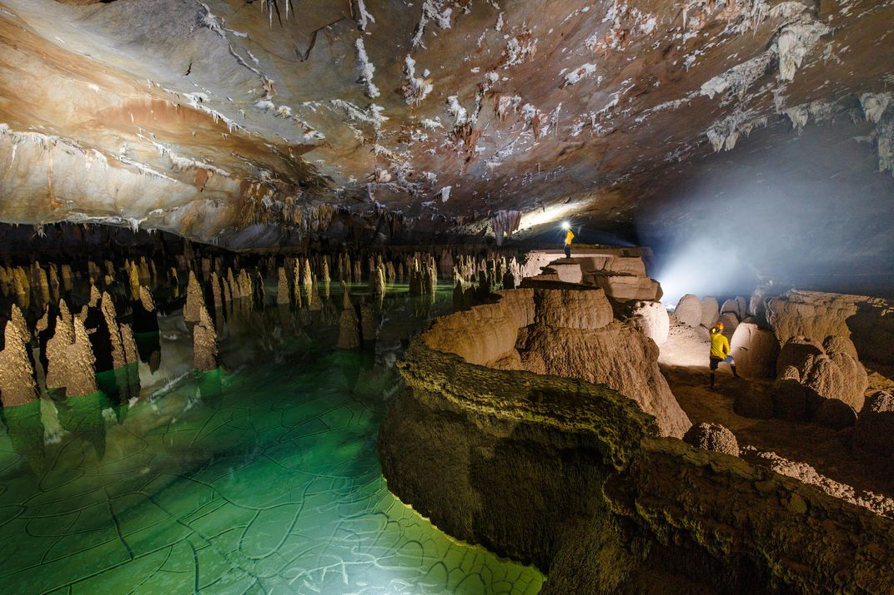
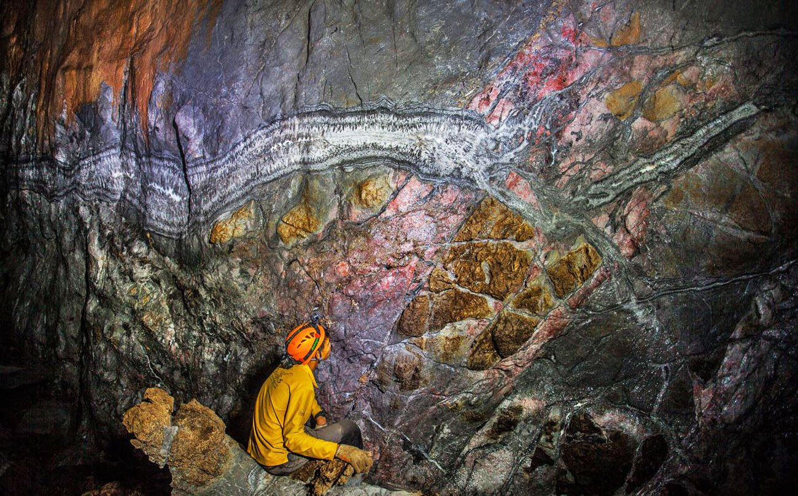
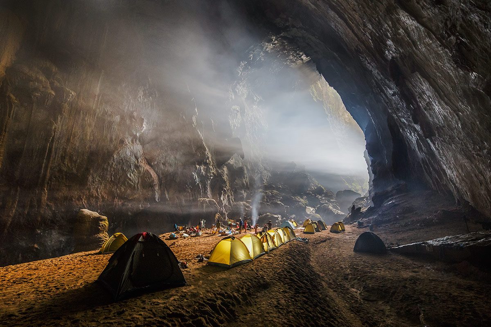

ベトナム「世界最大の洞窟」ソンドン洞
July 3, 2020
世界最大の洞窟と名高い「ソンドン洞窟」の洞窟探検ツアーが、2014年2月から正式に開始。洞窟のある場所は、 ベトナム北中部クアンビン省「フォンニャー・ケバン国立公園」の敷地内。アジア最古・世界最大の岩山が集まる 地域の中には、大小300以上もの洞窟が存在するという。
2009年にイギリスの探検隊が初めてこの洞窟の調査を行い、世界最大であることが確定。政府の公認ベトナムの旅行会社 Oxalis社が今年8月にこの洞窟のツアーを試験的に実施するとともに、来年2月から実施予定の6泊7日間ツアーの 参加申し込みを現在受け付けしている。
ソンドン洞窟の口
   重要な情報
- 4日間の探索、3泊のキャンプ。
- 年1回の洪水のため、1月から8月にのみ利用できます。
- グループのサイズ：最大10人。
- 年齢：18歳以上。
- 距離：17kmのトレッキング、8kmの洞窟探検、800mの高度変化、「ベトナムの万里の長城」の90mの登り。
- 難易度：レベル6 –難しい。
- 旅程は天候により変動する場合がございます。 雨が降ると、小道は滑りやすく、泥だらけになります。
ハイライト
- スペシャリストと一緒に世界最大の洞窟を発見してください。
- 2つの巨大な洞窟の天井が崩れることに驚嘆します。
- ユニークな地下の熱帯雨林を探索します。
- 川を横断–地上と地下の両方。
- 1日3回作りたての食事と軽食を楽しめます。
- 地下の川に飛び込む（オプション）。
- ロープとはしごで90メートルの「ベトナムの万里の長城」をスケーリングします。
- 世界有数のキャンプ場で眠る。
- 世界で3番目に大きな洞窟であるハンエンを発見します。
ソンドン洞窟の中
   ソンドン洞窟探検
- 4日間・レベル6
- プロモーション2020： 58,200,000VND
- 通常価格 69,800,000VND /（〜$3,000）